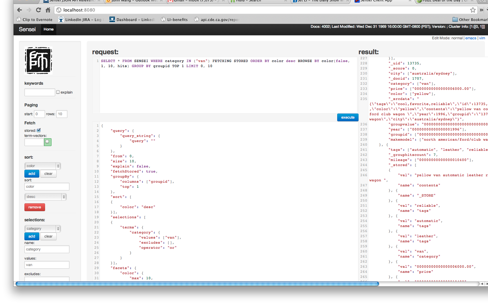

A useful tool to interact with Sensei

Sensei comes with a web application for you to interact with your Sensei cluster.
Each Sensei node embeds the console application running on the port specified by sensei.broker.port the setting, e.g.:
sensei.broker.port = 8080The application splits into 3 panels:
execute button
We found this tool to be very useful in debugging production systems. In situations where we want to reproduce a problem by replay a certain query (e.g. unexpected results, 0 hits, long latency etc.), we can grab the request from the sensei-query.log file and paste to the console application and tweak the request.